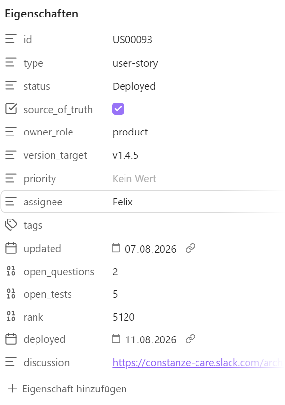

Page types
Every page in the wiki is a page type with a frontmatter contract. The contract is what makes a vault machine-checkable: an agent can verify that a page has an owner, that a derived page was refreshed after its source moved, that a ticket is complete enough to build. Without it, "the docs are current" is a feeling.
Property names are yours — Dispatch reads whatever you configure. The names below are the ones the examples use.
Where these rules live: in one shared invariants file —
dispatch/invariants.md— that each agent's instruction file (CLAUDE.md,AGENTS.md) points at, not in the individual skills. They are invariants that every workflow must respect; a rule copied into six skills is a rule that will hold in four of them, and a rule copied into two agents' instruction files will hold in one. Skills describe procedure; the invariants file describes what is never allowed to happen.
Every page#
---
status: approved # approved | draft | proposed
source_of_truth: true # authoritative only when both are set
updated: 2026-08-13 # last meaningful change
owner: Morgan # accountable human → 00_Start-Here/Team/
---
status+source_of_truth— a page is authoritative only with both. Everything else is context: useful, quotable, not binding. This is what lets you keep drafts and research in the same vault without an agent treating them as decided.updated— a date an agent can compare against something else. A page that claims to describe the current system and hasn't moved in six months is a finding, not a fact.owner— a person, never a team. "Everyone owns it" is how a page goes stale without anyone noticing. The owner is who gets asked when the page is wrong, and the name should resolve to a page under00_Start-Here/Team/.
Derived pages#
A page generated from something else — a schema doc from the live database, an API catalog from the code, a report from a rulebook — carries two more:
derived_from: 07_Engineering/Backend/ # source path, repo path, or URL
maintained_by: /weekly-maintenance 1.6 # the job that regenerates it
The rule that makes documentation stay current: a skill that creates a derived page must also register its refresh. If no recurring job owns it, the skill isn't allowed to create the page — because an unmaintained generated document is worse than no document. It looks authoritative and ages silently.
That contract is checkable. A recurring job can flag:
- pages with no
owner - derived pages whose
derived_fromchanged after theirupdateddate - pages whose
maintained_byjob no longer exists - pages marked
source_of_truth: truethat are stubs
Which is a strictly better inconsistency report than one built on judgement calls.
Tickets#
The most important type — one note per story, bug or task, and the only type the Kanban board reads. Everything the board shows comes from frontmatter:
---
id: US00042
type: story # story | bug | security | task
status: "Development" # quote it — values contain spaces
priority: high
rank: 2048
version_target: v1.4.0
size: 3
assignee: Alex
open_questions: 0 # empty until someone has counted
open_tests: 5 # empty until the test plan is written
open_findings: # empty until a review has counted
discussion: https://… # the thread where the team talked
updated: 2026-08-13
deployed: 2026-08-07 # stamped on completion
frozen: 2026-08-05 # stamped when the spec closes (see below)
---

| Property | Read by |
|---|---|
id | card title prefix; the {{id}} chip variable — a ticket without one drops out of every batch chip |
type, priority | badges, slice-by |
status | Kanban columns — the configured order is your pipeline |
rank | manual order within a column (priority) |
release_rank | manual build order within a Release Plan column, if the board names it as the release order property |
version_target | Release Plan columns, normalized by major.minor |
size | weighted progress and the velocity forecast |
assignee | owner badge, slice-by, Todos fallback owner |
open_questions | the ? N badge — 0 is the gate out of refinement; empty means nobody has counted, which is not the same as 0 |
open_tests | the ✓ N badge — 0 means manual review is complete; empty means no test plan has been written, which is not the same as 0 |
open_findings | the ⚠ N badge — blocking findings from the latest code review; empty means no review describes this build, which is not the same as 0 |
discussion | chat icon linking to the thread |
deployed | drives the velocity forecast (completed weight per day) |
The explicit small-bug shortcut may complete without
an independent review: its record says review was omitted and open_findings stays
empty. It still assesses coverage, records actual verification and requires no
outstanding manual checks before open_tests: 0 and completion. It finalizes and
freezes the contract before completing, and writes the configured completion date
and tracker state itself. This does not relax the ordinary /test-plan review gate.
Two conventions worth adopting: quote status values, since they contain spaces, and make id mandatory via the required-properties setting, so the problems panel catches a missing one immediately.
The freeze rule#
A ticket has two zones, and they behave differently once code exists.
Contract zone — Goal / Symptom, Acceptance criteria, Open questions and their answers, Scope, Implementation plan. This is what the implementation was built against.
Record zone — As-built notes, Test plan and results, Follow-ups, dated comments. This is what actually happened.
The contract zone freezes when the ticket leaves development — at the status where code exists that depends on it (Ready for Build in the example pipeline). Stamp frozen: with the date, so the boundary survives a card being dragged backwards later.
After the freeze:
- Contract sections are read-only. New information becomes a dated entry in the record zone.
- A wrong frozen statement gets an annotation, never a rewrite:
> ⚠️ Correction 2026-08-12: …directly beneath it. The wrong sentence stays visible, because that is what the code was built on. - New scope is a new ticket, linked both ways. A finished ticket is not superseded — it is finished, and the new work is a different piece of work.
- Every skill that writes to tickets checks the freeze first. On a frozen ticket it appends to the record zone or opens a follow-up, and says which it did.
The reason is auditability, not ceremony. If a spec can be edited after the code was written against it, then a later mismatch between spec and code has two explanations — the code is wrong, or the spec drifted — and no way to tell them apart. Rewriting an answered open question is the sharpest case: it erases what was actually decided at build time, which is often the only record of why.
Mark the zones in the ticket template so the boundary is visible while writing, not just documented somewhere.
ADRs#
One file per durable decision, in 07_Engineering/Decisions/, indexed by Decisions.md.
---
id: ADR-0012
status: accepted # proposed | accepted | superseded
date: 2026-05-14
superseded_by: ADR-0031 # only when status: superseded
owner: Alex
---
- Record the rejected alternatives, not just the decision. Half an ADR's value is the deliberate we do not do X — those are the ones re-proposed every few months by someone who wasn't there.
- Never delete one. Supersede it: mark
superseded, link forward withsuperseded_by, and leave the original in place. The link is what makes it useful — a reader lands on the old decision and is pointed to the current one, instead of merely warned off. - A change that contradicts an accepted ADR is a decision to reopen, not a detail to work around.
- ADRs are written from tickets — the implementation-plan step is a natural extraction point, since that is where durable decisions get made and would otherwise be buried in a spec nobody reads again.
Releases#
One note per release, in 08_Delivery-and-QA/Releases/. The Release Plan tab reads them: a note for x.y.0 links from the version line, and each x.y.z links from its patch column when the line is expanded.
---
version: v1.4.0
date: 2026-08-07
status: released # planned | released
owner: Alex
---
Contents worth keeping: what shipped (as links to the tickets, which carry the detail), what the build metadata was, and what deliberately did not make it. Release notes are events — they were true on their date and never become untrue, so they need no currency marker. They are, however, the fastest way to answer "when did this behaviour change?", which makes the ticket links the important part.
Meetings#
One note per meeting, in 09_Meetings/, named YYYY-MM-DD - <meeting>.md. Feeds both the Meetings tab and the Todos tab.
---
meeting_date: 2026-08-04
participants: [Alex, Robin, Morgan]
discussion: https://… # the thread where the agenda was announced
decisions_folded: 2026-08-05 # when decisions were written into the tickets
open_actions: 3
---
- The agenda is written before, from the board — open refinement questions, tests waiting for sign-off, what blocks the next release. Announce it in the thread named by
discussion:so the team can add to it. - The report is written after, from the transcript in
01_Sources/together with that thread — the thread usually carries the context the transcript lacks. decisions_folded:is the property that matters. A meeting note's decisions are worthless until they reach the tickets they affect, and that is a real, changing, checkable state — unlike "historical", which every meeting note eventually becomes and which therefore carries no information.- Action items go in an allowlisted section (default "Action items"), with an owner as a bold line or an inline
**Name:**prefix. That is what the Todos tab collects.
Meeting notes are never authoritative. Durable outcomes get promoted — into tickets, or into an ADR — and the note stays as the record of when it was said.
Legal and domain documents#
One folder, three kinds of document that behave nothing like each other. Getting them confused is why "legal outranks product" feels wrong to anyone who has actually shipped a privacy declaration.
| Kind | Example | Where it comes from | Precedence |
|---|---|---|---|
| External constraints | GDPR, AI Act, medical-device rules, app-store policy | imposed on you; the text lives in 01_Sources/Domain/ | above everything — no decision of yours changes it |
| Negotiated commitments | privacy declaration, terms of use, data-processing agreement | derived from your product: counsel supplies a standard document, you state the deltas you need, counsel checks what is legally available | product leads while drafting; binds the product once published |
| Generated inventories | open-source licenses and attributions | derived mechanically from the dependency tree | a derived page — regenerate, never hand-edit |
The middle row is the one that needs a contract, because it changes direction the moment it ships:
---
status: approved
source_of_truth: true
owner: Morgan # the accountable person on your side, not the lawyer
counsel: <firm or person> # who reviewed it
published: 2026-08-07 # the date this text went live
binds: v1.4.5 # the release whose users agreed to this text
supersedes: [[Privacy Declaration v1.3]]
---
- A published legal text is never edited in place. Publish a new version and keep the previous one verbatim — "what did this user agree to in March?" is a question you must be able to answer per release, and consent records point at a version. Same shape as the ticket freeze: a document is freely editable until something depends on it, then changes become a deliberate, versioned act.
- The drift check runs backwards. For most engineering docs you ask "does the doc still match the code". For a published commitment you ask "does the code still match what we promised" — and when it doesn't, the code is the defect. Give that check a recurring job, because it is the one place where a documentation gap is a liability rather than an inconvenience.
- Owner is internal. The lawyer authored the text; they are not the person who notices that a shipped feature contradicts it. That is someone on your team, and their name goes in
owner:. - The source artifacts belong in
01_Sources/— counsel's standard draft, the signed final, the regulation itself. The wiki page is your working version; the artifact is what you were actually given.
Reports#
Dated, recurring analyses in 02_Product/Reports/ — scope gaps, doc↔code drift, market scans. Derived pages, so they carry derived_from and maintained_by.
The part worth stealing: the rulebook lives next to the reports, not in the skill. One page per report in _definitions/ describing what it measures, what counts as a finding, how findings are ranked, and what goes in the summary. The skill executes; the rulebook decides. That way tuning a report — raising a threshold, excluding a category, changing the KPI — is a wiki edit a non-developer can make and review, instead of a code change.